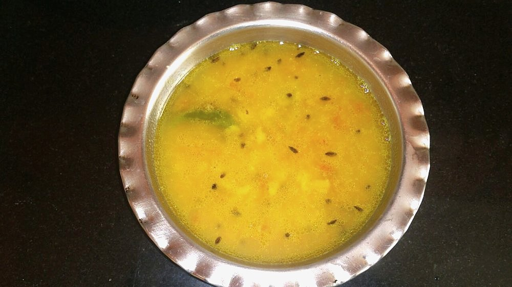

Start the day before. The soaking alone is 8 hr, against 70 min of actual work.
Contains: mustard
Ingredients
Quantities for 4.
- 1 cup (200g) Horse Gramgahat or kulthi; pick over for grit before soaking
- 3 tbsp Mustard Oil
- 1 tsp Cumin Seeds
- 1/4 tsp Fenugreek Seedsjust a few seeds. More turns it bitter
- 1/4 tsp Asafoetidause compounded-free hing to keep this gluten-free
- 8 cloves, crushed Garlic
- 1 inch, grated Ginger
- 2, slit Green Chilli
- 2 medium, chopped Tomato
- 1/2 tsp Turmeric
- 2 tsp Coriander Powder
- 1 tsp Chilli Powder
- 1/2 tsp Dry Ginger Powderoptional
- 1 litre Water
- to taste Salt
- 3 tbsp, chopped Coriander Leavesoptional
Cookware
stovetop, pressure cooker
Checked against the ingredient list for ten allergens: milk, egg, fish, crustaceans, tree nuts, peanuts, sesame, mustard, soy and gluten. Brands vary, so read the label on anything new to you.
Before you start
- Soak the horse gram in plenty of water for at least 8 hours or overnight. It is the hardest pulse in the Indian kitchen and unsoaked it will hold you at the stove for hours.
- Do not throw away the soaking water if you like the dish strong; hill cooks often cook the dal in it. Discard it if you find gahat heavy to digest.
- Have the tempering ingredients chopped before you open the cooker. The dal is added straight into the hot masala.
Method
- Drain the soaked horse gram and pressure-cook it with the litre of water and the turmeric for 6 whistles, then let the pressure drop naturally, about 15 minutes.Naturally releasing pressure lets the grains finish softening; quick-releasing leaves them chalky in the middle.
- Check a grain. It should crush easily between finger and thumb. If not, cook 3 more whistles.
- Heat the mustard oil in a wide pan until it smokes lightly, then lower the heat.
- Crackle the cumin and fenugreek seeds for 20 seconds, then add the asafoetida.Fenugreek burns in seconds and goes acridly bitter. Get the next ingredient in fast.
- Add the garlic and fry 2 minutes to pale gold, then the ginger and green chilli for 1 minute more.
- Add the tomatoes with the coriander powder and chilli powder. Cook 8 minutes on medium until the tomatoes collapse and oil beads at the edge of the masala.Wait for the oil to separate. The raw tomato taste hangs around in the finished dal otherwise.
- Tip in the cooked horse gram with all its liquid and the salt. Bring to a boil.
- Simmer uncovered on low for 20-25 minutes, mashing a ladleful of grains against the side of the pan halfway through to thicken the broth.
- Stir in the dry ginger powder and take off the heat.
- Rest 5 minutes, scatter coriander leaves and serve with rice or mandua roti.
Storage
Keeps 4 days refrigerated and improves on the second day. Reheat on the stovetop with a little hot water; the dal drinks up liquid as it sits.
Nutrition Good estimate
Medium protein: 12 g a serving, 16% of the calories
| Per serving364 g | Per 100 g | |
|---|---|---|
| Calories | 302 kcal | 83 kcal |
| Protein | 12.4 g | 3 g |
| Carbohydrate | 38.3 g | 10 g |
| of which sugars | 3.1 g | 1 g |
| Fibre | 9.8 g | 3 g |
| Fat | 11.9 g | 3 g |
| of which saturated | 1.4 g | 0 g |
| of which unsaturated | 9.3 g | 2 g |
Ingredients given to taste count as zero, so the real figures run a little higher. Nearest database match used for asafoetida, horse gram. Estimated from raw ingredients using USDA FoodData Central.
More like this: Healthy Indian recipes · Vegan Indian recipes · Vegetarian Indian recipes · Gluten-free Indian recipes · Dairy-free Indian recipes · Pahari recipes
Times, yields, allergens and nutrition are guidance. Use your own judgement on doneness and on storing. More in About.